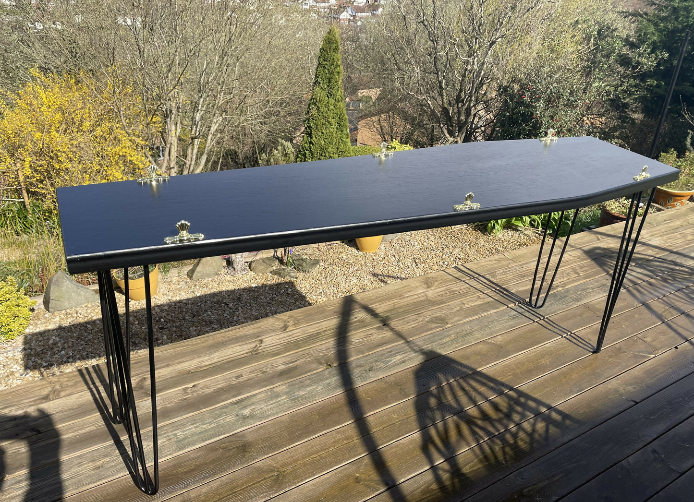
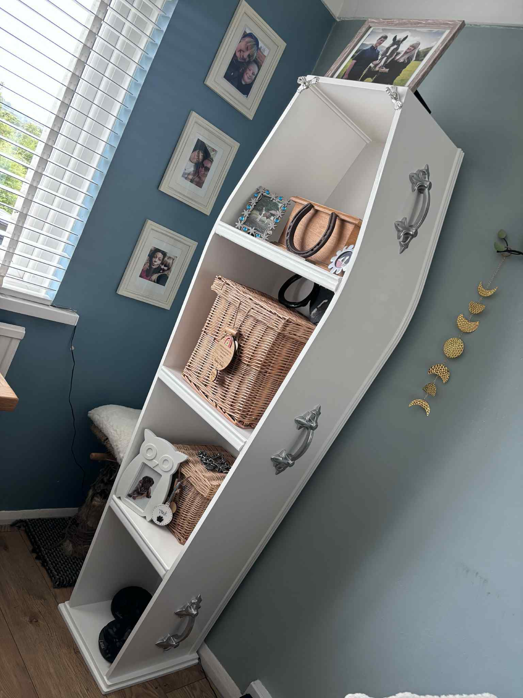
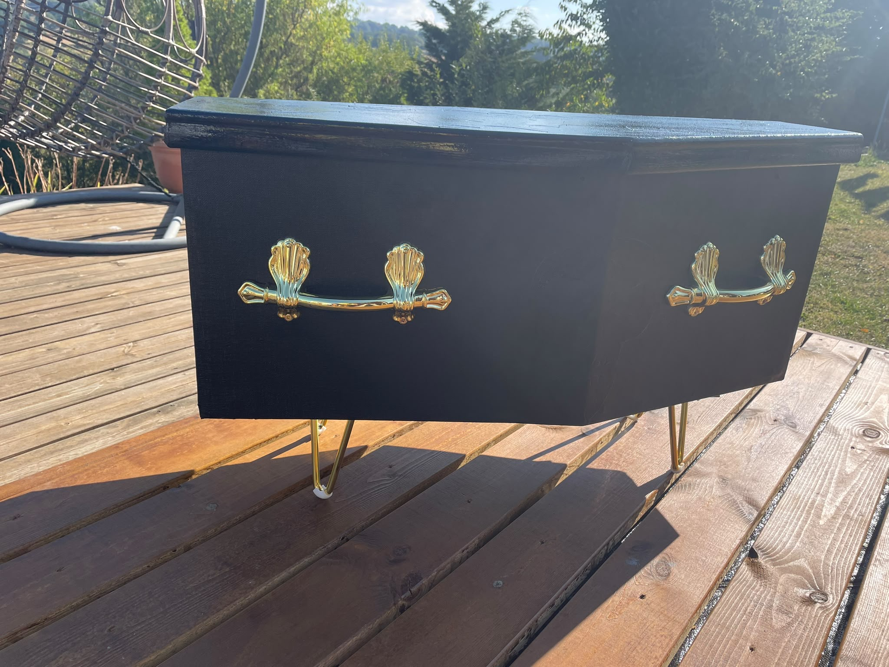
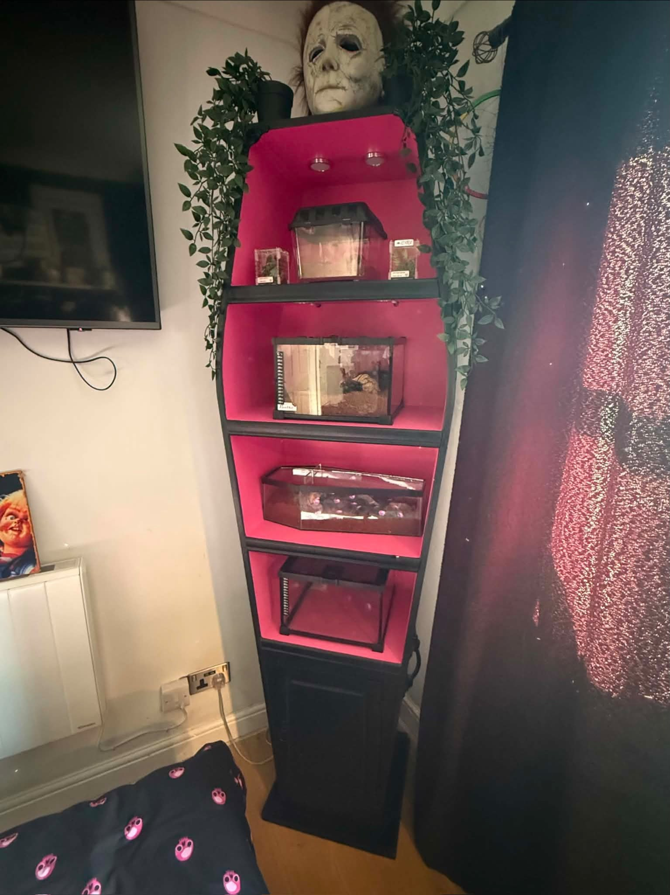
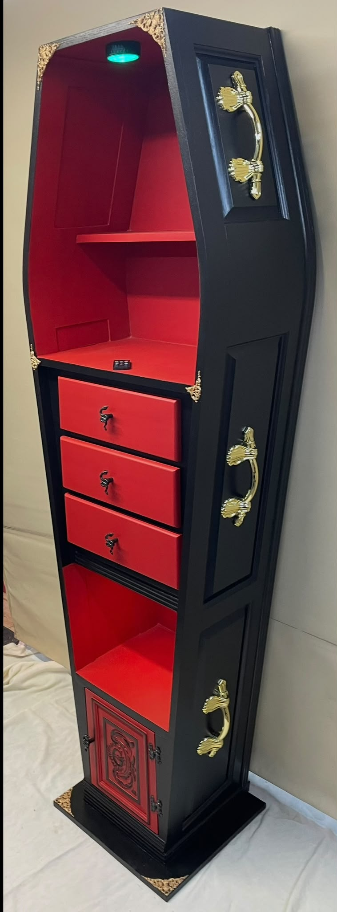
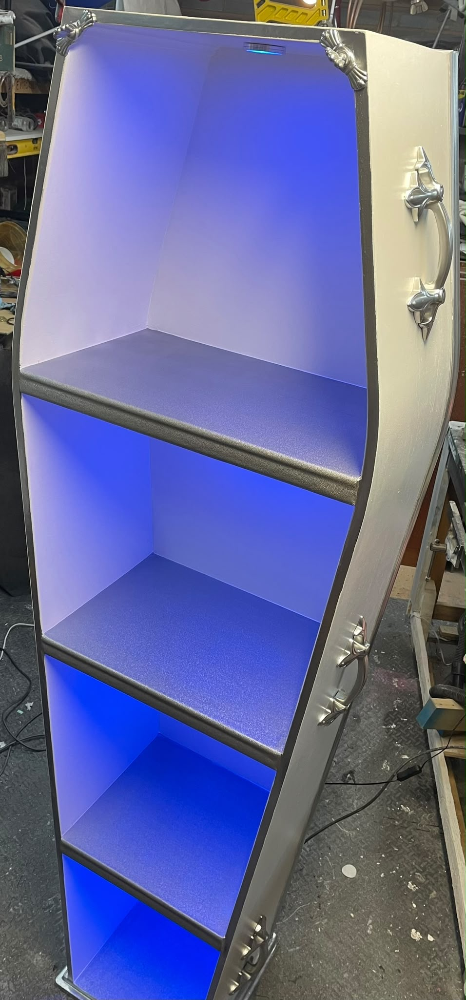
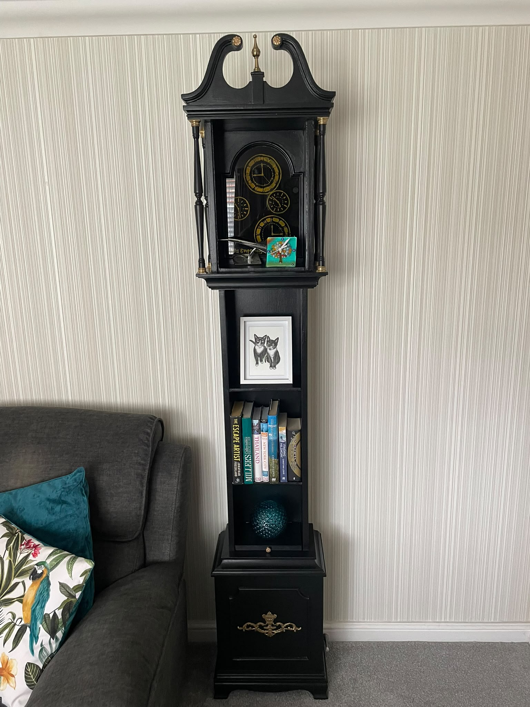
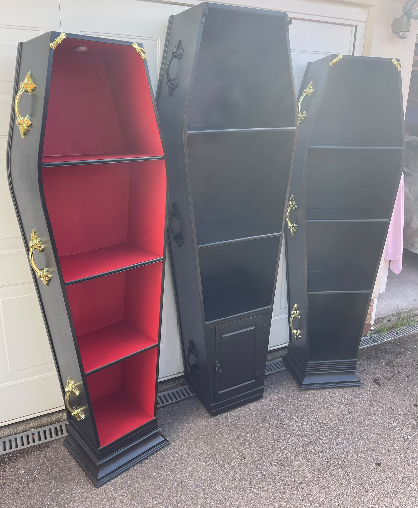
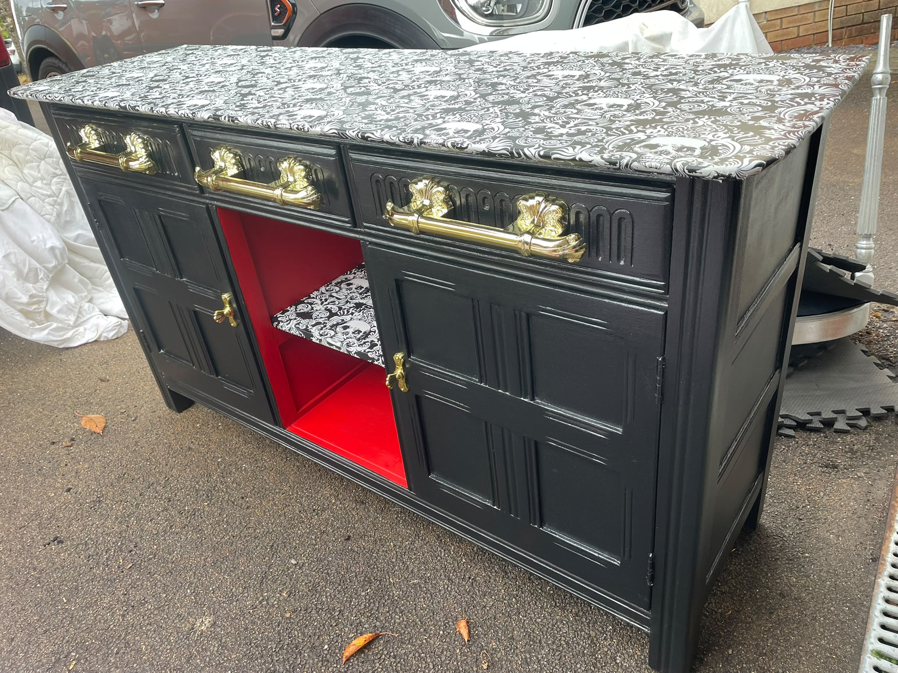
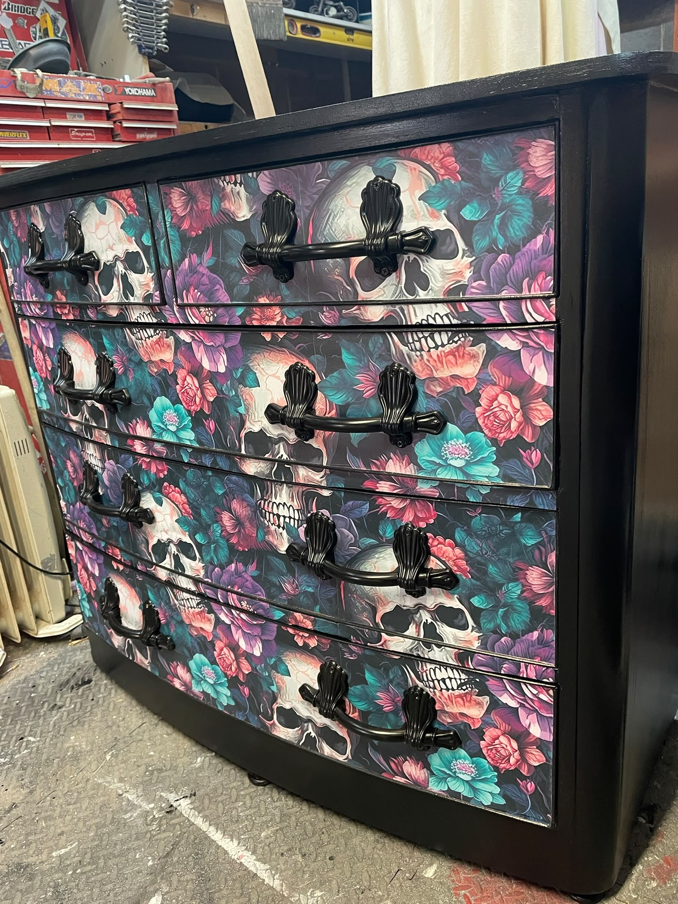

Signature collection
Coffin furniture, gothic restorations and statement pieces made to start conversations.
MADE TO ORDER
Coffee tables, storage, shelving and custom variations can be made to order.









